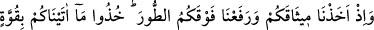
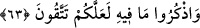
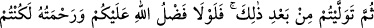
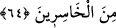

63. Sizden sağlam bir söz almış, Tûr dağının altında, size verdiğimizi kuvvetle
tutun, onda bulunanları daima hatırlayın, umulur ki, korunursunuz (demiştik de);
Allah Teâlâ İsrâîloğulları’nın atalarının işlediği başka bir suçu hatırlatarak: “Ey Benî
İsrâîl, atalarınızdan Tevrât’taki hükümlerle amel etmelerine dâir söz aldığımız vakti
hatırlayın” buyurmaktadır. Bu olay, Mûsâ ile beraber Mısır’dan çıkıp boğulmaktan
kurtulduktan sonra daha Tîh’e girmeden önce vuku bulmuştur. Tûr, İbrânîce’de “dağ”
demektir. Mûsâ (a.s.) onlara üzerinde emirler yazılı levhalar getirmiş, emirlerin ve
ahidlerin zorluğunu gören İsrâîloğulları, kendilerine ağır geldiği için bunları kabûl
etmemişlerdir. Bunun üzerine Cebrâîl’in emriyle Tûr dağı kökünden sökülüp onların
üzerine yükselerek gölgelik gibi durmuştur. Mûsâ (a.s.) İsrâîloğulları’na: “Ya bu
emirleri kabûl edersiniz, ya da Tûr üzerinize kapanır” deyince, başka çâre olmadığı için
emirlerini kabûl etmişler, Allah’a söz vermişlerdir. Dağ üzerlerine kapanmasın diye
hemen secdeye gitmişler, bu arada bir yandan da dağı gözetlemeye başlamışlardır.
Gözlerinin biriyle dağı gözetlediklerinden yüzlerinin yarısıyla secde etme âdeti
Yahûdîlere buradan kalmıştır. Yahûdîler, “Bu secde sebebiyle bizden azâb kaldırıldı.”
derler. Tevrât’ı kabûl etmeleri için dağın onların üzerine kaldırılması, onları îmâna
zorlama değildir. Zira cebr, insandan irâdenin selbedilmesidir. Bu olay, kâfirlerle
savaşmak gibi olduğundan câizdir. “Dinde zorlama yoktur” (el-Bakara, 2/256) âyetine
gelince bu ve bunun gibi âyetler, kıtâl âyetiyle mensûhtur.
İbn Atıyye der ki: Allah onları secde ettikleri vakit cebretmiştir; çünkü onlar, kalbleri
itmînâna ermeden kerhen îmân etmişlerdir, şeklindeki yorum doğru değildir. Bu yüzden
onlara; size verdiğimiz kitâba ciddiyetle, azimle ve her zaman sarılın, ondaki hükümleri
ezberleyin; tedrîs edin, unutmayın ve kitabımızdan gâfil olmayın, umulur ki
müttakîlerden olursunuz, dedik.
64. Ondan sonra sözünüzden dönmüştünüz. Eğer sizin üzerinizde Allah’ın ihsânı
ve rahmeti olmasaydı, muhakkak zarara uğrayanlardan olurdunuz.
Sonra siz kesin bir söz verdikten sonra ona vefâ göstermekten yüz çevirdiniz. Allah
size acıyıp da azâbını geciktirerek mühlet vermeseydi, muhakkak hepiniz helâk